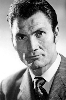

Country:United States, 100 minutes
Spoken languages:
Genres:Documentary
Director(s):Brent Zacky
Writer(s):
Video Codec:Unknown
Number: 1348


Certification:
Storyline:
The true stories that spawned the eerie tale of Damien, a small boy with an angelic face, whose very name still conjures up thoughts of Satan. This documentary shares spine-tingling information about the the all-too-memorable flick that has terrorized film audiences since 1976.
Cast: 
Medium: Original DVD,
Loaned: No
Aspect ratio: Unknown